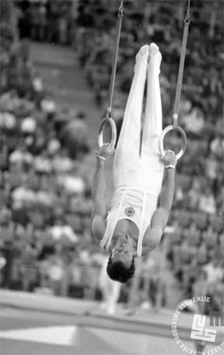

Janez Brodnik (YUG)

1964, 1968 and 1972 Olympian
1971 Mediterranean Games AA Champion
Brodnik was born on May 6, 1944, in Golnik (Slovenia). He was the youngest member of the 1964 Yugoslav Olympic team.
Competition Results
1964
Olympic Games: 12th Team, 57th AA
1965
European Championships: 18th AA
1966
World Championships: 7th Team, 55th AA
1967
HUN-YUG Dual Meet: 1st Team, 2nd AA
Pre-Olympic Test Event: 15th AA
1968
Olympic Games: 6th Team, 23rd AA
1969
European Championships: 16th AA
1970
University Games: 4th Team, 11th AA
World Championships: 4th Team, 20th AA
1971
Balkan Championships: 3rd AA
European Championships: 12th AA, 5th HB
Mediterranean Games: 1st Team, 1st AA
Winnipeg International: 8th AA
World Cup: 6th AA
1972
GDR-YUG Dual Meet: 2nd Team, 5th AA
ITA-YUG Dual Meet: 2nd Team, 14th AA
Olympic Games: 12th Team, 32nd AA
1973
European Championships: 17th AA
This page was created on April 11, 2020.
© Gymn Forum